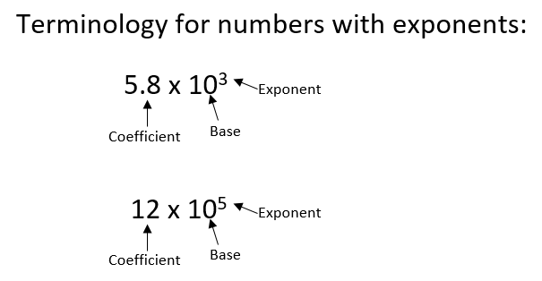

Exponent math
In this unit, we talk about how to multiply, divide, add, and subtract numbers that have exponents. (For a review of the basics of exponents, click here.)
Multiplication: When multiplying two numbers with base 10 with exponents, multiply the coefficients (numbers in front of the 10^exponents) and then add the exponents.
For example (both numbers have coefficients of 1):
Example #2 (both numbers have coefficients of 1):
Another example (both numbers have non-one coefficients):
Division: When dividing two numbers with base 10 with exponents, first divide the coefficients then subtract the exponents.
For example:
Another example:
If there are non-one coefficients, then divide the coefficients also.
For example:
Addition/Subtraction: When you are adding or subtracting two or more numbers with 10 to an exponent, you first need to make sure the exponents are the same in all numbers. Then add/subtract the coefficients and keep the common 10x.
Addition example:
Subtraction example:


***Note for Teachers: You can access more information about this website and find other resources for science inquiry on the ISP Tutor website.
©2021 Klahr Lab, Carnegie Mellon University. All Rights Reserved
Carnegie Mellon University | Dept. of Psychology | 5000 Forbes Ave. | Pittsburgh, PA 15213 The TED project was funded in part by the Institute of Education Science (IES), Grant R305H060034, and in part by the National Science Foundation, Grant SBE035442. The ISP Tutor project is funded by IES, Grant R305A170176.
The research reported here was supported by the Institute of Education Sciences, U.S. Department of Education, through Grant R305A170176 to Carnegie Mellon University. The opinions expressed are those of the authors and do not represent views of the Institute or the U.S. Department of Education.